瓶罐調查操作手冊
歡迎使用荒野瓶罐調查系統。本手冊將詳細指引您從系統安裝到現場實地調查、資料上傳的完整步驟。
瓶罐調查說明
1 調查目的
彙整瓶罐的數據分析其密度、熱點、品牌及產地，做為政策遊說、環境倡議的重要參考依據。
2 調查工具介紹
調查記錄的工具，以掃瞄條碼搭配手動輸入記錄海邊的廢棄瓶罐。
協助建置常見海廢瓶罐的工具，擴充應用AI協助建立瓶罐基本資訊。
3 調查方法標準化
- 每個海灘最多分 4 組調查（高潮帶左右岸、低潮帶左右岸）
- 建議優先選擇高潮帶位置，一路往前行進不回頭
- 每次記錄 20分鐘，時間到停止調查進行回報上傳
- 沿著潮帶記錄寬度 2公尺 間的所有瓶罐（包含裸瓶/無標籤、部份破損、包裝完整)
- 依瓶罐包裝破損程度，進行掃描條碼、前 3 碼搜尋、手動輸入等方式記錄每個瓶罐
- 在有足夠人手時使用荒野瓶罐建檔站，協助建立台灣海邊常見瓶罐資料
第一章：瓶罐調查操作流程
0 系統入口與安裝
荒野瓶罐調查回報站：https://maxhsiehsow.github.io/marine-survey/
建議將網頁「加到主畫面」安裝或建立捷徑，以獲得最佳的全螢幕體驗。

Android 加入主畫面操作
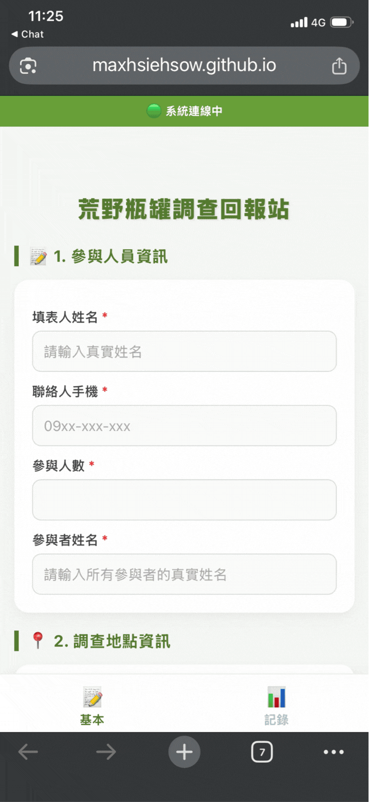
iOS (Apple) 加入主畫面操作
1 參與人員資訊
請填寫人類名 (勿只填自然名)，利於後續統計及感謝。
填寫一次即會自動留存，於參與人員調整時記得進行修改即可。

2 調查地點資訊
可用「自動定位」或「尋找樣點」兩種模式進行定位。
自動定位
定位於現地，不限設定的樣點，隨時隨地皆可調查，系統會自動定位於該地的鄉鎮巿。
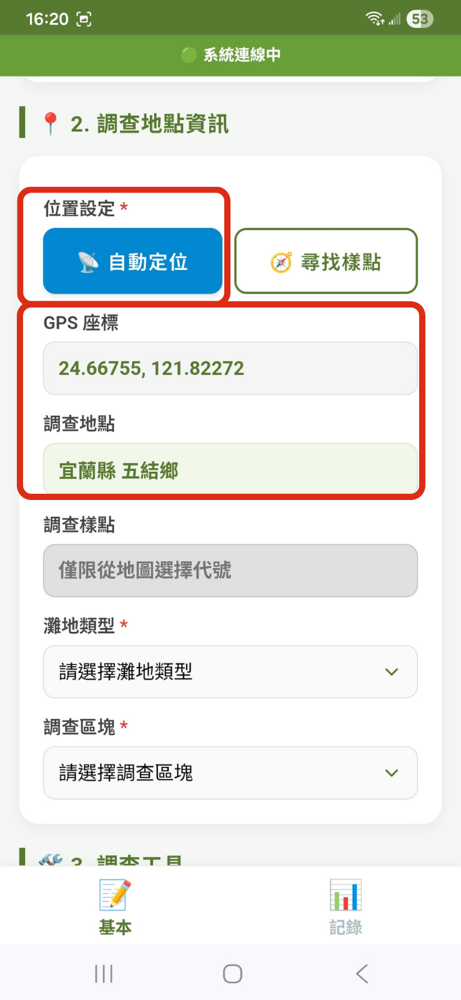
尋找樣點
於荒野預設的全台 121 個樣點進行調查。可點選全台任一樣點或臨近的 3 個樣點進行調查。
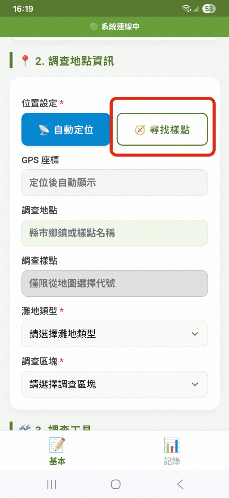
灘地與區塊選擇
- 灘地類型： 提供 5 種常見地形選項 (沙灘/泥灘/礫石灘/礁岩/消波塊海堤)，請以「超過 50%」的類型做為記錄標準。
- 調查區塊： 調查員面對海的方向，右側為右岸、左側為左岸。
- 高潮線：海水最大潮淹至的地方，通常堆積較多垃圾，建議優先挑選。
- 低潮線：當日的水線附近，通常垃圾較少。
- 如灘地狹窄，請統一登錄為「高潮線」。
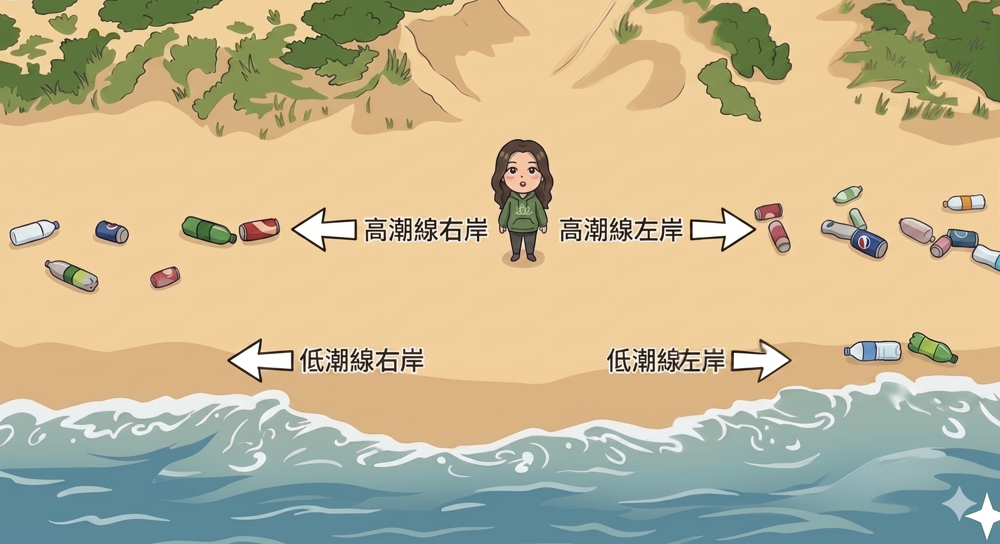
3 調查工具
⏳ 調查計時
每個樣點調查時間為 20 分鐘。系統會捉取 GPS 座標計算調查距離。
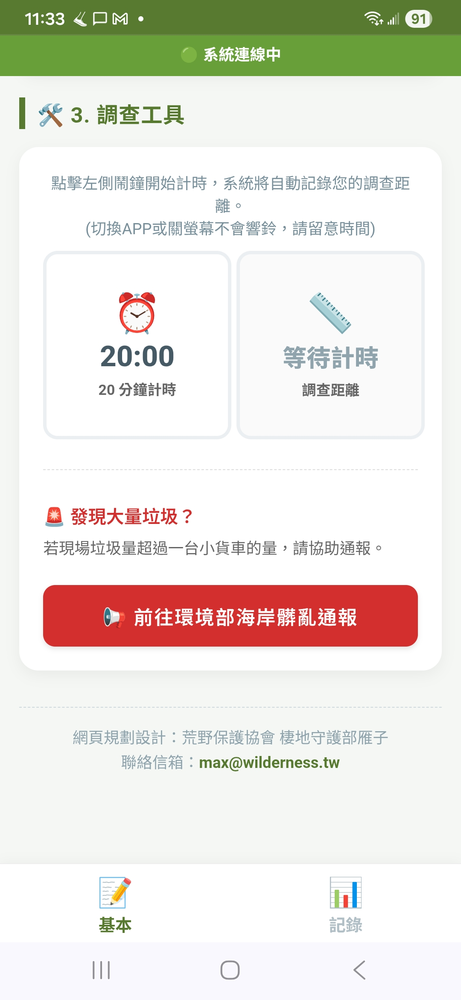
發現大量垃圾？
調查結束後，若現場垃圾量超過一台小貨車的量，請協助通報。
⚠️ 3月至7月海邊有水鳥繁殖，請暫時不要通報清理
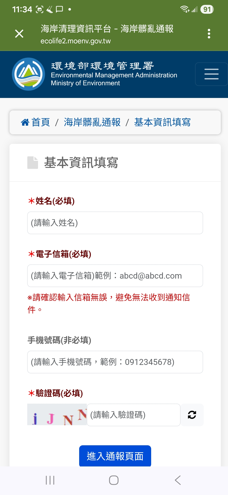
4 記錄與成果
調查核心區域。提供多種方式進行條碼記錄，下方圓餅圖會即時顯示目前的國家統計狀況。
掃描條碼記錄
對準條碼掃描，不分前後方向。請核對掃描出的條碼數字是否一致，如一致按確定即可增加一筆記錄。
系統比對瓶罐是否已完成建檔：有資料會顯示商品名稱；無資料會提示「發現未知商品」，請記錄此筆瓶罐後交由其它夥伴建檔（依現場人力分工）。
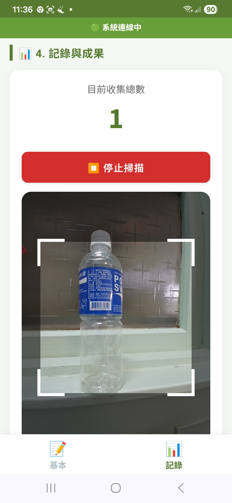
1. 掃描中
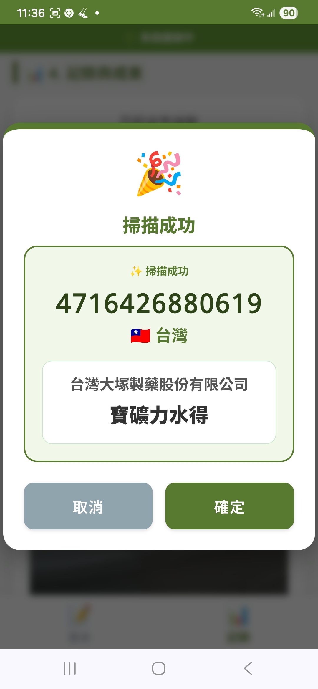
2. 已知商品 (直接記錄)
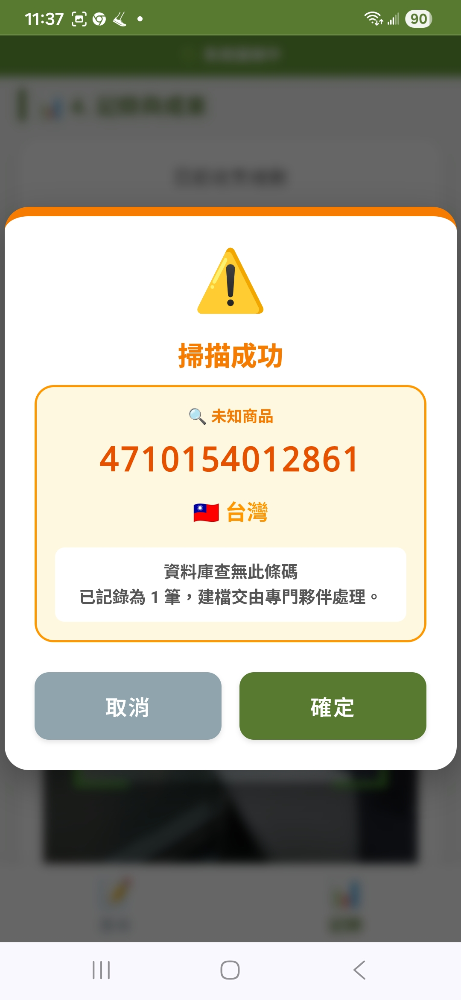
3. 未知商品 (提示建檔)
手動輸入記錄
如果條碼因磨損不完整，可手動輸入條碼「前 3 碼」進行國家別查詢（例如 471 代表台灣），確認無誤後再加入記錄。
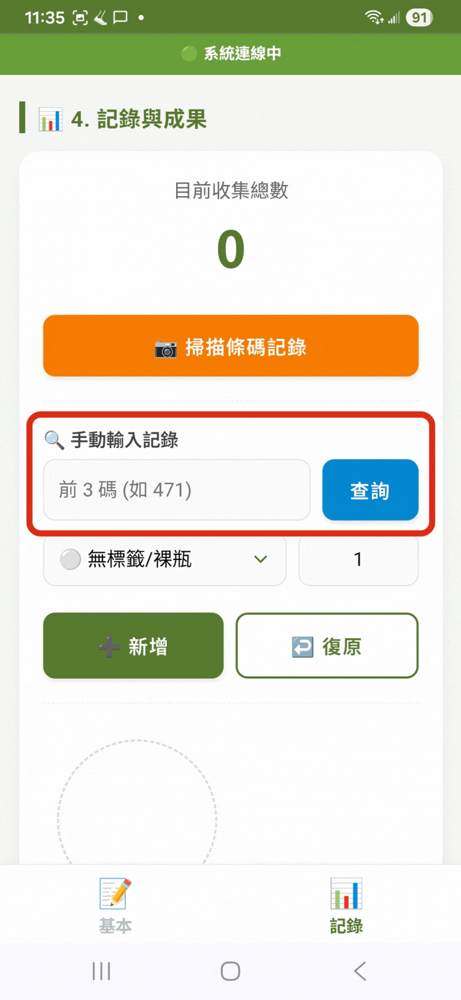
批次輸入
裸瓶或無條碼可直接累積計數。如果前 3 碼不完整，但能明確分辨出國家別，可下拉選擇常見國家別，填寫數量後批次加入。
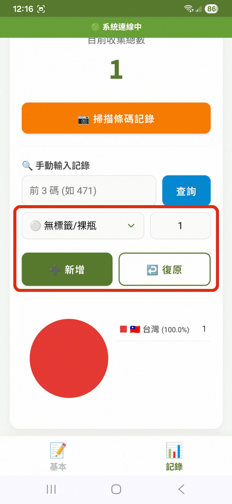
復原記錄
如果新增錯誤，如重複掃瞄、算錯數量，可按畫面上的「復原」鈕，系統會刪除最近一筆輸入記錄。
5 成果上傳
距離與備註
20 分鐘計時到期會跳出通知。系統底部有「其他記錄」欄位，任何認為值得記錄的內容都可以寫下（如在測試系統，請記得於此註記）。
照片上傳規範
- 現場照片： 需包含環境照 1 張、人員合照 1 張。
- 熱點照： 垃圾密集處，最多 2 張。
- 特殊瓶罐照： 特殊品牌或罕見垃圾，最多 4 張。
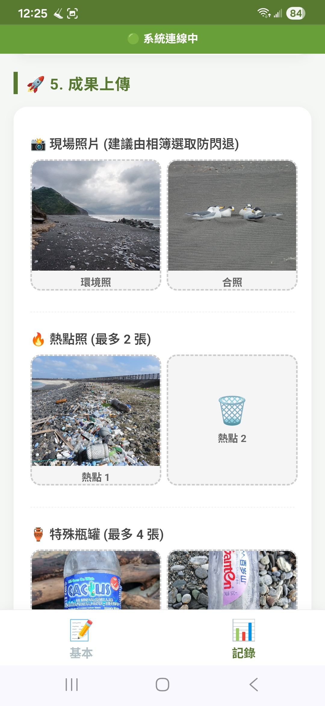
完成記錄與上傳
按下「🚀 上傳資料至雲端」即會送出。⚠️ 在顯示成功動畫前，請勿關閉程式或螢幕
收到上傳成功動畫後，資料除了個資外會自動清空，您可以繼續下一筆調查。
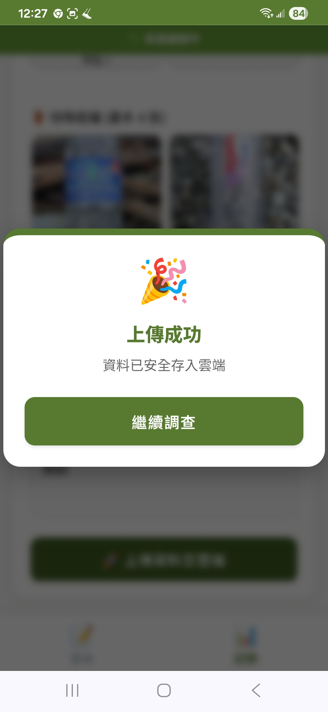
第二章：瓶罐建檔操作流程
1 建檔站入口
荒野瓶罐建檔站：https://maxhsiehsow.github.io/marine-survey/Builder.html
系統會自動記錄發現座標，（請允許位置權限），同樣建議將程式「加到主畫面」。
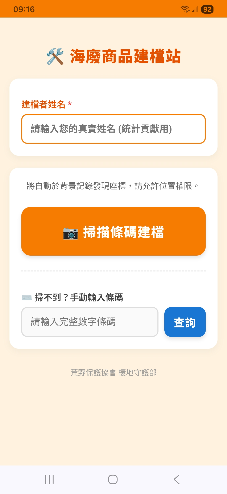
建檔版首頁
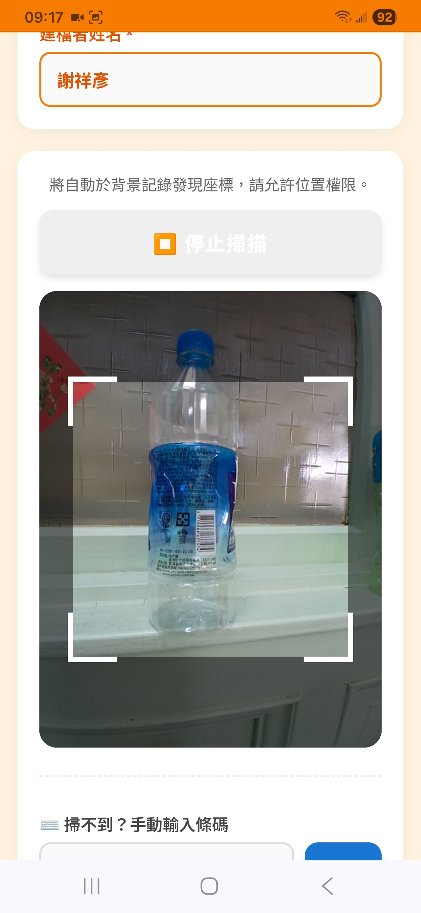
啟動掃瞄條碼建檔
2 掃瞄建檔機制
點擊「掃描條碼建檔」，系統會自動判斷條碼狀態分流：
情況 A：全新商品
資料庫完全查無此條碼。
提示：請協助建立全新檔案！
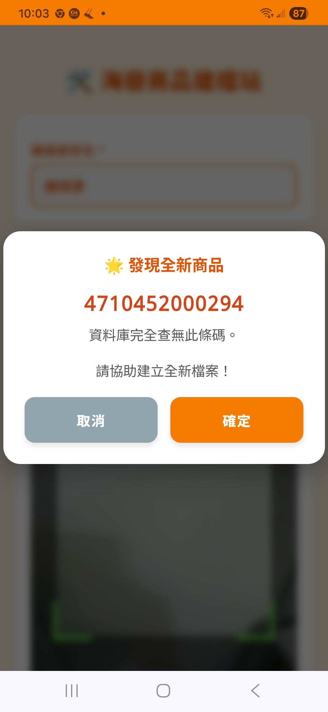
情況 B：無照片商品
已知商品名稱，但缺乏清晰照片。
提示：請協助立即補拍！
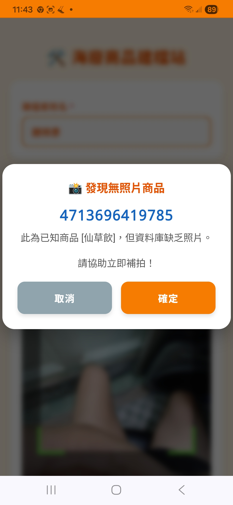
情況 C：資料完整
已有資料與照片。若覺得原資料有誤，可點擊確定「重新覆寫編輯」更正。
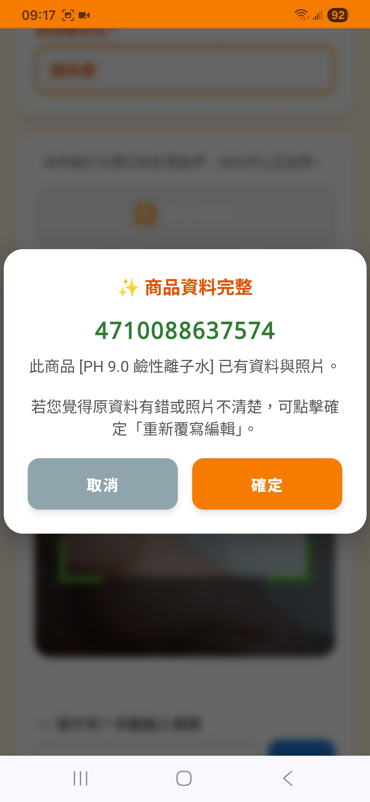
3 AI 辨識代填與建檔
- 上傳照片： 必須包含一張清楚的正面照，與一張條碼清楚的背面照。
- 點選畫面上紫色的 「✨ AI 辨識代填 (支援簡繁轉換)」 按鈕。
- AI 會透過圖片分析，自動協助提供並填入「商品名稱」及「廠商名稱」。
-
人工確認防呆： AI 難免有誤，請務必協助人工確認並修正可能的錯漏字。
- 確認無誤後，點選「確認上傳」。出現「建檔成功 / 新增圖鑑完成」即代表照片與資料已同步至雲端庫。
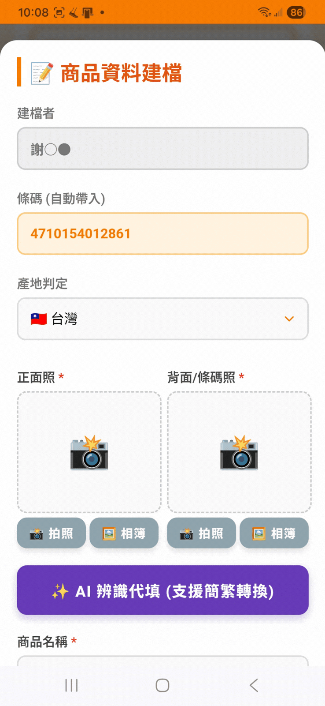
第三章：特殊狀況與實戰應對
海岸無網路？ (離線模式自動保護)
🔍 症狀： 上方狀態列顯示紅色「離線模式」。
✅ 應對方式：
請安心繼續調查。按下上傳時，資料會安全存入手機內部記憶體。當您回到市區或有網路的地方後，只需打開網頁，點擊畫面上方的「☁️ 立即同步」即可將資料補傳至雲端。
手機過熱 / 網頁頻繁閃退
🔍 原因： 海邊高溫曝曬，加上瀏覽器同時呼叫相機與 GPS 定位功能，極易造成手機記憶體耗盡而強迫關閉網頁 (閃退)。
⚡ 終極應對解法：
系統提供復原機制，重啟後請按「是」恢復先前記錄。
上傳照片時，不要直接在網頁內按拍照！
請先跳出網頁，用手機原本內建的「相機 APP」拍好所有的照片，然後再回到網頁，選擇 「從相簿上傳」。這樣做可以 100% 避免網頁閃退導致辛苦調查的資料遺失。
畫面全黑 / 無法開啟相機與定位
🔍 原因： 您可能是在 LINE 或 Facebook 群組中直接點開網址。這類「內建瀏覽器」會阻擋 PWA 系統的相機與 GPS 權限。
✅ 應對方式：
請點擊畫面右上角的 「⋮」設定鈕 或 「↗️」分享鈕，選擇 「以預設瀏覽器開啟」（Android 請選 Chrome，iOS 請選 Safari），即可正常使用並安裝至桌面。
烈日反光導致「條碼掃不出」
🔍 原因： 圓柱體的瓶身加上強烈的陽光反光、或是條碼磨損，讓相機無法對焦條碼。
💡 應對方式：
- 製造陰影： 請背對陽光，用自己的身體或手掌幫瓶身擋住強光，在陰影下掃描成功率最高。
- 果斷切換： 嘗試數次仍掃不出，請直接改用 「手動輸入前 3 碼」 或 「下拉選單批次輸入」，保持調查的流暢度最重要！
第四章：調查樣點認養
- 2026年上半年度調查期間為 4/1 至 6/30 止，邀請荒野志工登錄認養表格，進行樣點調查。
- 歡迎一般民眾參與，不需填寫認養表格，可在任意地點自主調查(由系統自動定位)。